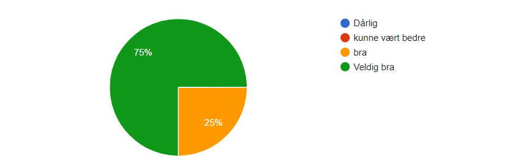

11. November 2018
Vi brukte en Google Form slik at de som testet nettiden kunne svare på formen etterpå. Vi foretok også testing "live", altså at vi så på mens brukeren testet siden.
Oppsummering av de spørsmålene vi stilte på Google Form:
Link til Google Form: Google Form
Etter vi fullførte nettsiden sendte vi nettsiden og en spørreundersøkelse til omkring 20 personer i vår målgruppe. Ettersom vår gruppe kommer fra flere forskjellige deler av landet fikk vi en del mennesker fra våre hjemsteder til å prøve siden, slik at vi fikk en mer diverse gruppe med testere. Vi kjørte tester med 20 mennesker, hvor 15 kjørte siden og fylte ut skjemaet på egenhånd og vi gjennomførte «live testing» med 5 personer. Da vi gjennomførte live testing lot vi dem utforske siden på egenhånd og gi oss verbal tilbakemelding mens de utforsket siden. Om lag 1/4 svar var fra andre informatikkstudenter, 2/4 var andre studenter uten informatikkbakgrunn og de resterende var andre voksne. Hensikten var å få tilbakemeldinger fra et bredt spektrum av brukere innenfor vår målgruppe, slik at vi kan tilpasse nettsiden til deres erfaringer.
I spørreundersøkelsen fikk vi tilbakemeldinger fra «andre voksne» om å gjøre teksten flere steder på siden større slik at den skal bli lettere å bruke for folk med dårligere syn. Dette valgte vi å utbedre med en gang dersom dette var en enkel problemstilling å utbedre og ville gjort nettsiden lettere å bruke.
En student med IT bakgrunn fant ut at man kunne booke bord på ett tidligere tidspunkt på samme dag. Dette hadde vi fått til med datoen at det ikke var mulig, men hadde ikke tenkt på det når det gjaldt tidspunkt. Vi fikset på det med en gang, dersom dette kunne skapt problemer ved bruk.
En annen informatikkstudent fant også ut at våre restauranter-siden var bredere enn skjermlengden, slik at han kunne bla horisontalt i siden uten å finne nytt innhold. Dette hadde ikke vi sett, men vi rettet det opp med en gang med å redusere bredden på nettsiden tilbake til 100%.
Vi gjorde også en live-test på en godt voksen person. Han hadde problemer med å fylle inn riktig format under «telefonnummer» på meny-siden. Vi hadde en placeholder som viste «xxx xx xxx», og da testeren skrev inn først 9 siffer, som ga feilmelding, prøvde han å skrive 8 siffer på formatet slik placeholderen sa. Det ga også feilmelding, så til slutt måtte vi si at man ikke kan ha mellomrom i telefonnummeret. Vi forsto ganske fort at placeholderen gjorde folk forvirret, så vi fjernet den.
Live-testingen med målgruppen ga oss verdifulle tilbakemeldinger, som vi ellers kanskje ikke hadde fått.
Vi spesifiserte til brukerne at den er laget for pc, men at den skal funke greit på mobil også. Vi sa også at nettsiden bør helst bli åpnet i Chrome. Likevel var det i alle fall en person som brukte Firefox, og den personen hadde fått opp et rart tegn når "bestill +"-knappen ble trykket på. Kravet er at nettsiden skal fungere i Chrome, så vi tok ikke høyde for at den også funket i Firefox.
Vi vet at noen testet siden med mobil, og noen med pc. Vi fikk ingen tilbakemeldinger på manglende funksjonalitet på verken pc, mobil eller nettbrett. Det er gøy at den også funker på mobil, da vi tilpasset siden kun til Chrome.
Vi fikk både positive ting og og kontruktiv kritikk i tilbakemeldingene. Dette er noen av tilbakemeldingene vi fikk:
Diagram over hvordan folk synes nettsiden i sin helhet var:
Vi er veldig fornøyde med tilbakemeldingene vi fikk. Vi får en pekepinne om at nettsiden er bra, men også at den kan forbedres på enkelte ting.
Da vi fikk så på tilbakemeldingene fra testpersonene, vurderte vi hver tilbakemelding, og om vi skulle gjøre noe med det. En liste over endringer vi utførte på nettsiden etter testingen:
Det var noen tilbakemeldinger vi ikke gjorde noe med. For eksempel endret vi ikke skrifttype på hele nettsiden eller det at når man hovrer over navbaren så endres størrelsen på hele navbaren og ikke bare "booking", "meny" og "våre restauranter". Det var av den grunn at vi syntes skriften var fin, og at det var kult og ingen problem at hele navbaren blir større når man hovrer over den.
Gruppen vår begynte å jobbe med prosjektet ganske fort etter vi fikk oppgaven. Dette lønte seg da vi ble tidlig ferdige med mesteparten av prosjektet slik at vi fikk god tid før fristen til å løse de siste problemene i CSS og Javascript. Gruppa hadde liten erfaring med programmering før vi begynte på prosjektet, men under dette prosjektet fikk vi brukt mye tid på å lære oss nye ting. Vi opplever nå at vi har lært mange gode løsninger og fått testet egenskapene våre i løpet av prosjektet. Vi merket fort at flere av oss hadde ganske liten forståelse av JavaScript på starten av prosjektet, men etter å ha satt inn flere timer på booking og menysida (i tillegg til footer og navbar) fikk hele gruppa en bedre forståelse av språket og mulighetene i det.
Før prosjektet skulle vi også visst hvor viktig det er med divs, id og navn. Vi trodde ikke det var så viktig som det viste seg å være for styling og oversikt. I tillegg hadde det vært greit å kunne litt mer javascript, men det gikk greit da vi lærte det ganske fort.